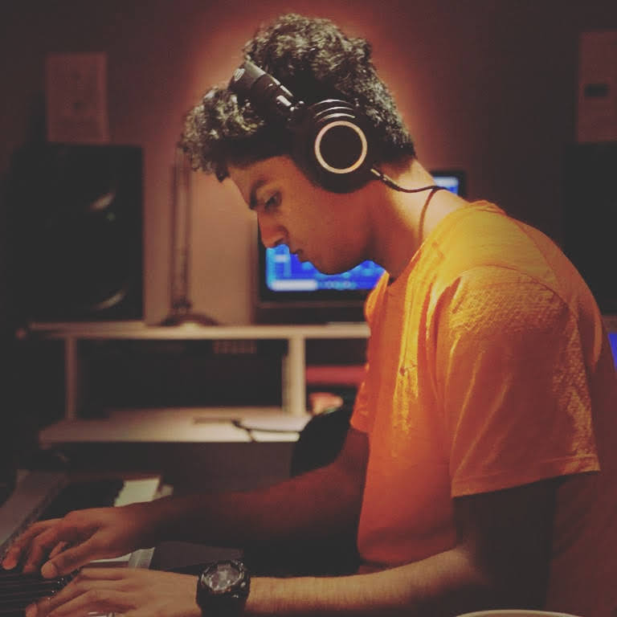

Nithin G S

I love music and have learned to play six instruments over the course of twelve years. I have been experimenting with MIDI controllers, sequencers, and Virtual Studio Technology for over five years in my home studio. This created an interest in the anatomy of sound and a curiosity in how people perceive sound in 3D. I wrote a paper for my school's academic journal on the acoustics of an organ, learning about how physics is applied to create a sound illusion. Being a music scholar and an audiophile, I want to learn about electronics and programming. In my free time, I experimented with a raspberry pi to create an airplay network music player as well as a games emulator. First, I used Cobalt, a design tool, as part of my GCSE DT project. I then taught myself programmes such as Fusion 360 and python to create 3D printable files and solve Euler problems, respectively. Amongst the books I read, I enjoyed “How not to be wrong - The maths of everyday life" by Jordan Ellenburg for which I wrote a blog article. The book helped me grasp A-Level Statistics and modelling. I also read 'Black Box Thinking' by Matthew Syed, a book I received for attaining the Tutor's award. This showed the importance of mindset when striving for efficiency. I also read “Bebop to the Boolean boogie” by Clive Maxfield. During lockdown I tried to fix an amplifier, referring to block and schematic diagrams from service manuals and learnt a lot about fault diagnosis in the process. As lockdown rules eased, I approached various companies for work experience and joined CB Electronics, specialist studio equipment manufacturer. I saw the whole process from designing circuits to shipping products. I was taught to solder, surface mount and test products as well as configure interfacing software. I have been asked to continue to run their Instagram business page and was invited to work during my holidays. I watched a lecture streamed by the Royal Institute in which Dr Tom Crawford explained the CMI ‘millennium problems’. The P vs NP problem was interesting to me as I had never considered a difference between an ‘easy to solve’ and an ‘easy to check’ problem. I attended a live Ted Talk event in which Paul Franklin, VFX supervisor, explained how equations were used to create the art in the movie ‘Interstellar’ which led to discoveries on the way blackholes react to light. Watching such lectures contributed in my wanting to study engineering. That said, my interest began at the age of 12 as a member of a robotics team where I designed the drivetrain. I am a corporal in the CCF which gave me the opportunity to fly aircraft and operate radios. I attained a Gold level qualification on the Air Cadet Leadership Course at RAF Cranwell. I lead a team in year 11 for a singing competition. As deputy Head of choir, I will be leading a chamber group. I hosted a virtual concert in aid of the NHS which was livestreamed by my school. I raised over £1000 and received the ‘Virtual Radley Award for creativity and charity’. My main sport is rowing, and our boat positioned 6th in National Schools Regatta.